More Apps, Faster Hot-Launch on Mobile Devices via Fore/Background-aware GC-Swap Co-design
ASPLOS ’24
gpu
attention
memory
systems
networking
More Apps, Faster Hot-Launch on Mobile Devices via Fore/Background-aware GC-S…
Background & Motivation
App Launching is Critical for User Experience
- Hot-launch: Switching to a cached background app. (Fast)
- Cold-launch: Starting an app from scratch. (Slow)
- Goal: Maximize the number of fast hot-launches.

Limited Memory
- Caching more apps requires more memory than available in DRAM.
- Solution: Use swap to offload memory pages to slower flash storage.
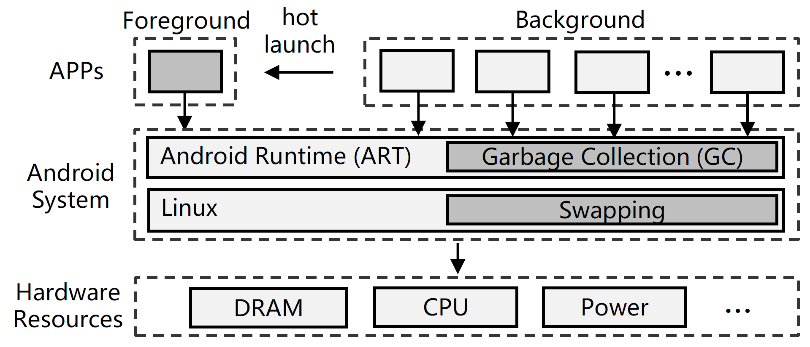
Two-Layer Memory Management
- Android Runtime (ART): A Java Virtual Machine
- GC: trace-based concurrent-copying GC.
- The GC performs liveness analysis of objects by traversing the object reference graph and copies live objects to a new memory location.
- Regions: a segment of continuous memory containing allocated objects
- Mutator threads: all threads except GC threads.
- Roots: root objects that directly/indirectly reference all objects
- Card table: mapping objects to regions
- GC: trace-based concurrent-copying GC.
- Linux Swap: extends memory using LRU-based swap
The Problem: Swap Degrades Hot-Launch Performance
- Enabling swap allows more apps to be cached, but it makes hot-launches much slower, especially tail latency.
- Existing methods like Linux Swap and Marvin suffer from this.
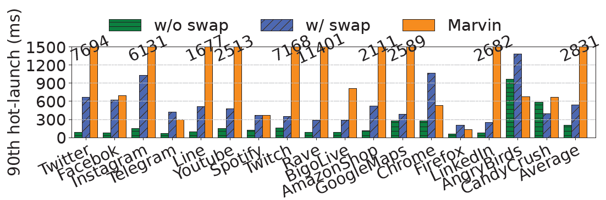
Root Cause 1: GC-Swap Conflict
- When an app is in the background, its Garbage Collector (GC) still runs.
- The GC traces all live objects, forcing pages that were swapped out to be read back into DRAM.
- This causes high I/O and negates the benefit of swap.
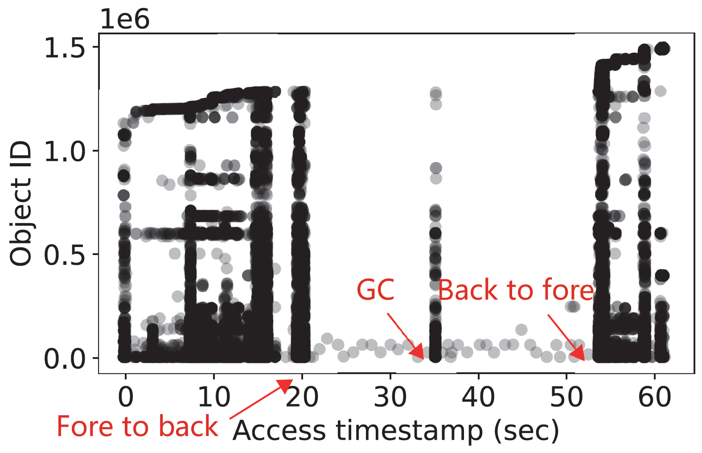
Prior Work: Marvin
- Goal: Solve the GC-Swap conflict.
- Mechanism:
- Decouples an object’s references from its data.
- Creates a small “stub” in DRAM containing the references.
- Swaps out the object’s data to flash.
- The GC can then trace using the stubs in DRAM, avoiding swap-ins.
- Limitations:
- Inefficient: Object-level stubs don’t match page-level swap.
- Long Pauses: Requires long “stop-the-world” (STW) pauses.
- Launch-Agnostic: Still uses a generic swap policy, leading to slow hot-launches.
Root Cause 2: Launch-Agnostic Swapping
- The standard Linux swap mechanism uses a generic LRU policy.
- It is unaware of hot-launch-critial pages.
- As a result, it may swap out essential pages, causing major delays when the app is relaunched.

Observation 1: Fore/Background Object Characteristics
- Foreground Objects (FGO): Allocated when app is in foreground. They are numerous and long-lived.
- Background Objects (BGO): Allocated when app is in background. They are few and short-lived.
- Insight: GC should focus on BGOs, leaving FGOs untouched in the background.
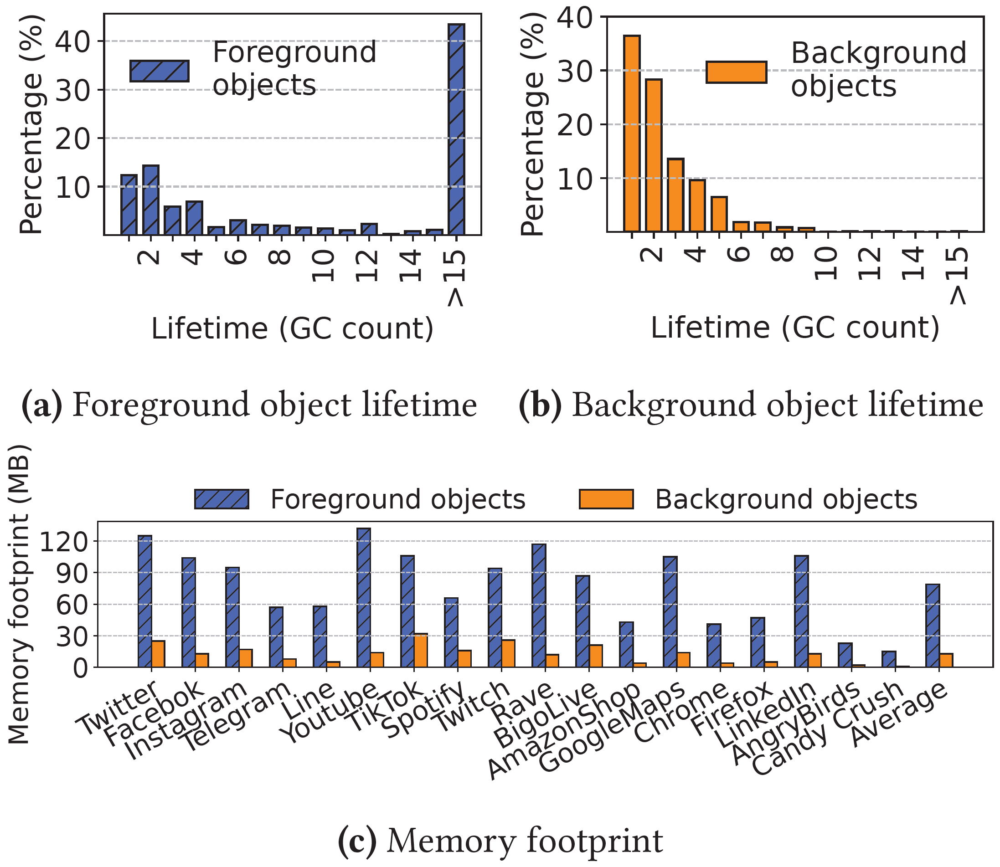
Observation 2: Hot-Launch Access Patterns
- A small, predictable subset of objects are re-accessed during a hot-launch.
- Near Root Objects (NRO): objects near the roots of the GC reference graph
- Foreground Young Objects (FYO): objects allocated just before the app is switched to background
- These objects account for ~68% of re-accesses but only ~15% of heap memory.
- Insight: We can selectively keep these critical objects in memory.
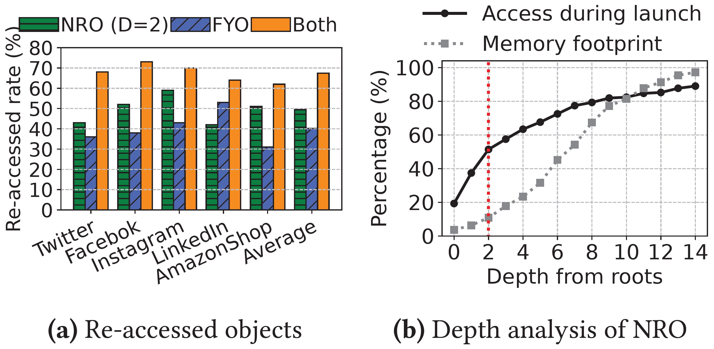
System Design
Fleet: A GC-Swap Co-design Framework
- Key Idea: Use runtime information to make both GC and Swap aware of the app’s foreground/background state and hot-launch needs.
- Two Components:
- Background-object GC (BGC): A GC that only traces background objects.
- Runtime-Guided Swap (RGS): A swap scheme guided by hot-launch access patterns.
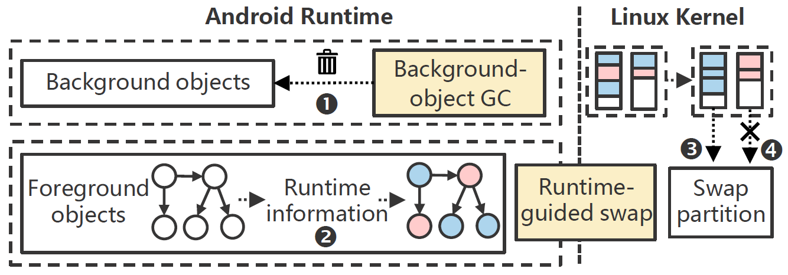
Background-object GC (BGC)
- Goal: Solve the GC-Swap conflict.
- Mechanism:
- Divides objects into FGO and BGO.
- When an app is in the background, BGC restricts its tracing range only to BGOs.
- Uses a card table to track references from FGOs to BGOs.
- Result: Avoids touching swapped-out FGOs, preventing unnecessary swap-ins.
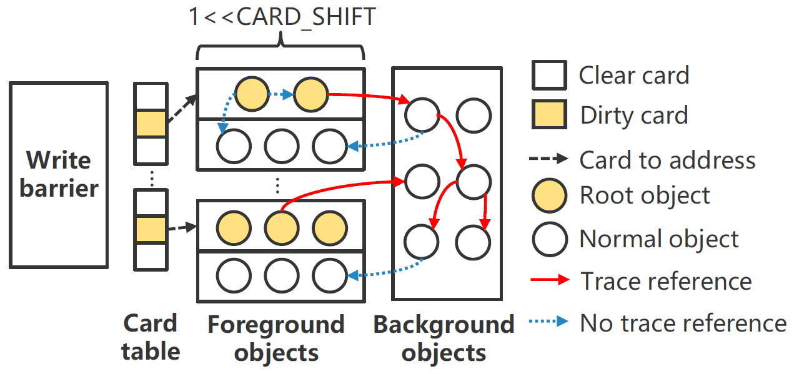
Runtime-Guided Swap (RGS)
- Goal: Make swapping launch-aware.
- Mechanism:
- Object Grouping: After an app is backgrounded, a one-time GC classifies objects into three types:
Launch(NRO, FYO)Working Set(currently used)Cold(all others)
- Page Swapping: RGS informs the OS kernel of this classification.
- Kernel actively swaps out
Coldpages. - Kernel keeps
Launchpages in DRAM.
- Kernel actively swaps out
- Object Grouping: After an app is backgrounded, a one-time GC classifies objects into three types:
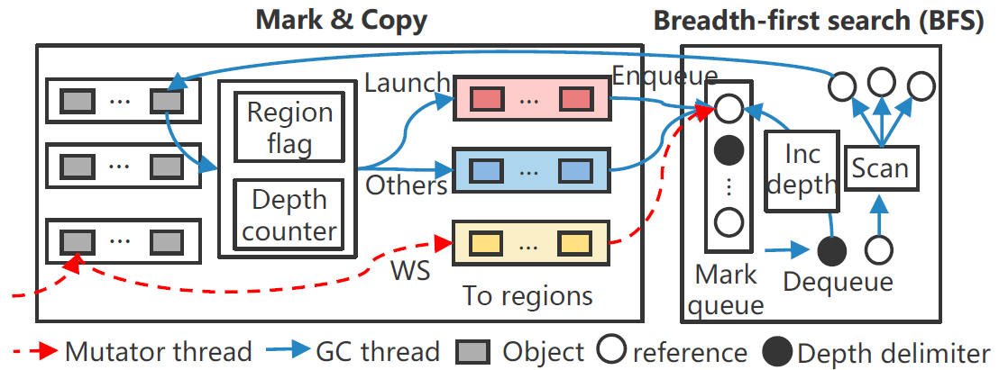
Evaluation
Experiment Setup
- Environment
- Google Pixel 3
- 4GB LPDDR4X RAM, Snapdragon 845
- 2GB Flash-based Swap Partition
- Android 10 (AOSP)
- Linux Kernel 4.9
- Google Pixel 3
- Workloads
- Commercial Apps
- 18 popular apps from 4 categories (Communication, Multimedia, Tools, Games).
- Manually Created Apps
- Used to test caching capacity without app-specific bias.
- Small object apps (512B) & Large object apps (2048B).
- Commercial Apps
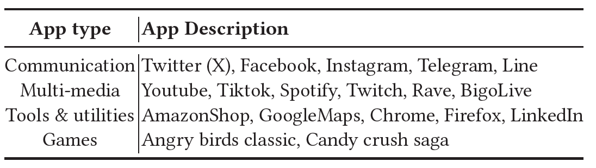
App Caching Capacity
- Fleet caches more apps than Android.
- For commercial apps, Fleet caches a maximum of 17 apps, a 1.21x improvement over Android with swap.
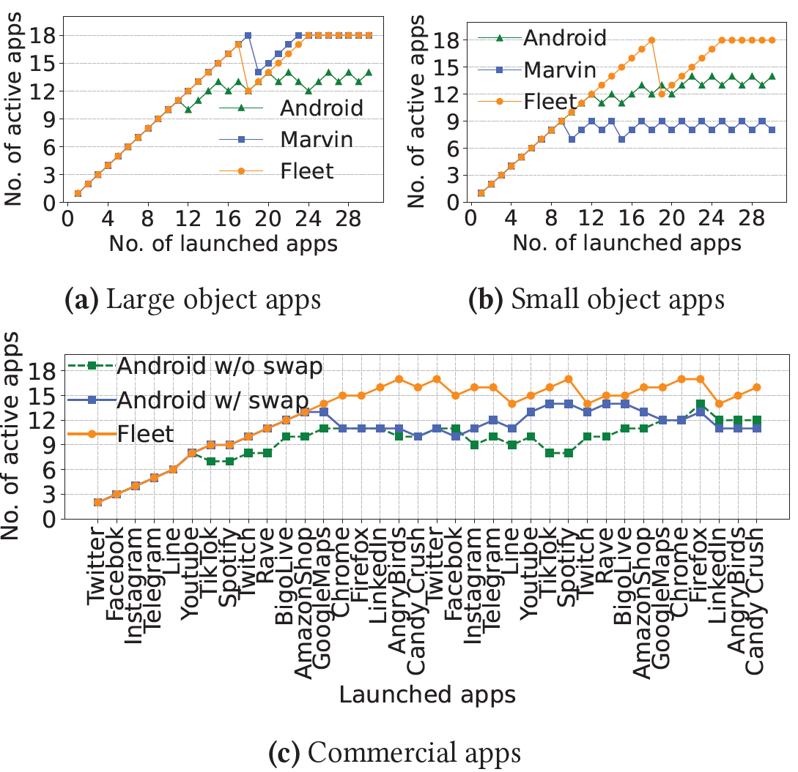
GC Working Set Reduction
- BGC significantly reduces the GC’s memory footprint in the background.
- On average, Fleet’s GC accesses 7x fewer objects than Android’s GC when an app is in the background.
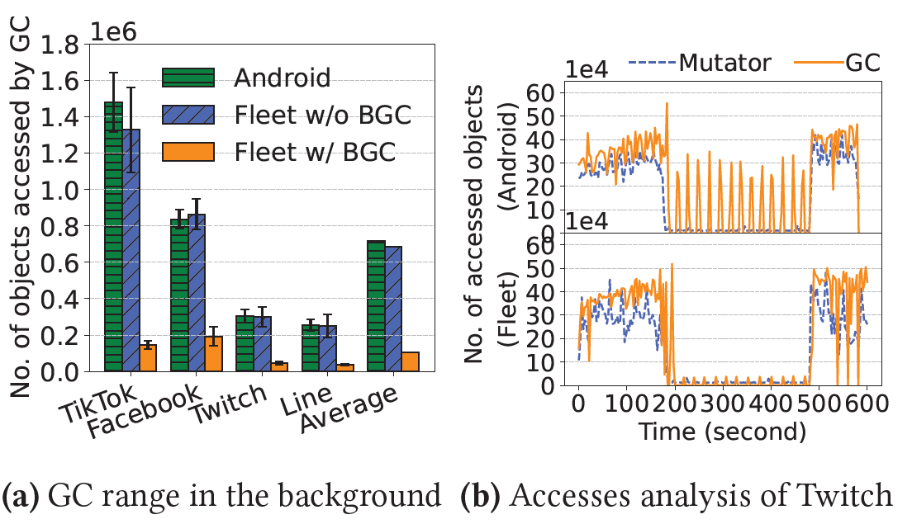
Hot-Launch Performance under high memory pressure
- Fleet provides significantly faster hot-launches under memory pressure.
- On average, Fleet’s median hot-launch time is 1.59x faster than Android and 2.62x faster than Marvin.
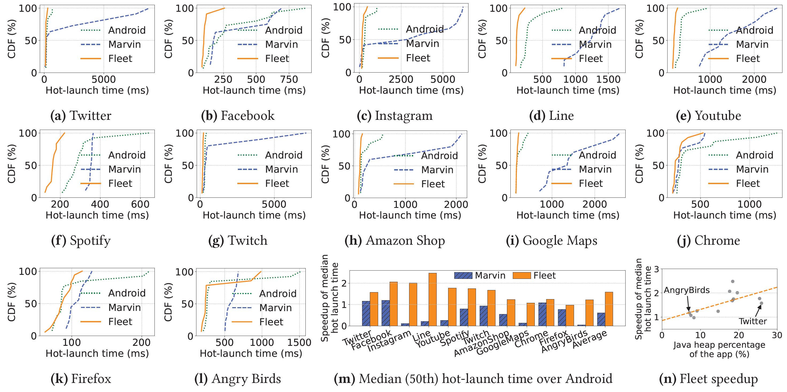
Runtime Overhead
- Fleet’s impact on runtime performance is minimal.
- Frame rendering (Jank ratio, FPS) is comparable to the original Android system.
- CPU, memory, and power overhead are negligible.
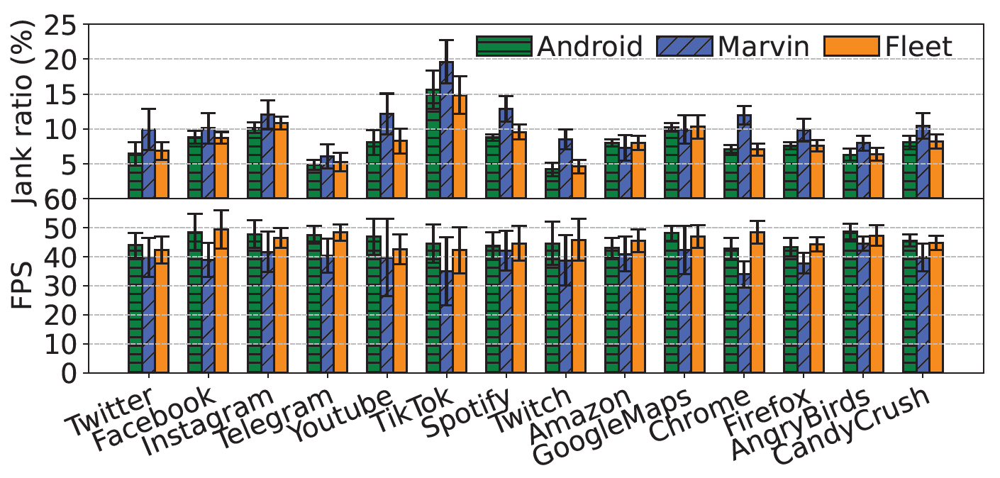